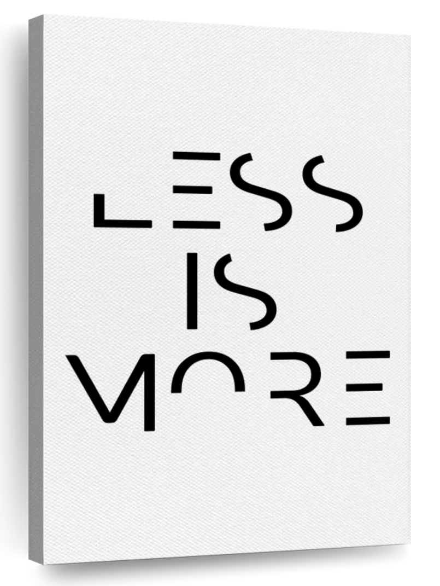

2ez.py : an experiment in easier AI. Less is more. (C) 2024 Tim Menzies, timm@ieee.org, BSD-2.
import re,ast,sys,math,random,copy,traceback
from fileinput import FileInput as file_or_stdinClass for quick inits of named structs, and pretty prints.
class o: def __init__(i,**d): i.__dict__.update(d) def __repr__(i): return i.__class__.__name__+str(show(i.__dict__))System defaults. Can be updated via command line.
e.g. ./2ez.py -d 4 changes the.decs to 4.
the = o(
decs = 3, # show floats to this many decimals
file = "data/misc/auto93.csv",
k = 1, # naive bayes low frequency hack
label = 4, # initial number of labellings
Last = 30, # max allow labellings
m = 2, # another naive bayes low frequecy backs
n = 12, # tinyN
N = 0.5, # smallN
Run = "help", # Start up action. See class `eg` (at bottom)
seed = 1234567891, # an odious, pernicious, apocalyptic and deficient prime
top = 0.8 # after sorting unlabelled, keep `top` items.
)DATA stores rows, which are summarized in column headers.
def DATA(): return o(rows=[], cols=[])COLS is a factory that makes, and stores, the columns (x,y are the indepednet and depednet
columns, all stores everything, klass is the class column).
def COLS(lst): return o(x=[], y=[], all=[], klass=None, names=lst)SYMs summarize a stream of symbols.
def SYM(txt=" ",at=0): return o(isNum=False, txt=txt, at=at, n=0, has={})NUMs summarize a stream of numbers. A trailing “-” or “+” denotes a numeric goal we need to minimize or maximize to 0 or 1.
def NUM(txt=" ",at=0,has=None):
return o(isNum=True, txt=txt, at=at, n=0, hi=-1E30, lo=1E30,
has=has, rank=0, # if has non-nil, used by the stats package
mu=0, m2=0, heaven= 0 if txt[-1]=="-" else 1)Create columns (one for each string in names).
def cols(names):
cols1 = COLS(names)
cols1.all = [_cols(cols1,n,s) for n,s in enumerate(names)]
return cols1Upper case names are NUM.
The klass name ends in “!”.
A trailing “X” denotes “ignore”.
If not ignoring, then the column is
either a dependent goals (held in cols.y) or a independent variable (held in cols.x).
def _cols(cols1, n, s):
col = (NUM if s[0].isupper() else SYM)(txt=s, at=n)
if s[-1] == "!": cols1.klass = col
if s[-1] != "X": (cols1.y if s[-1] in "!+-" else cols1.x).append(col)
return colCreate data. src can be any iterator that returns a list of values
(e.g. some list, or the csv iterator, shown below, that reads rows from a csv file).
def data(src=None, rank=False):
data1=DATA()
[append(data1,lst) for lst in src or []]
if rank: data1.rows.sort(key = lambda lst:d2h(data1,lst))
return data1Copy a structure (same column structure, but with different rows). Optionally, the rows in the new structure can be sorted.
def clone(data1, inits=[], rank=False):
return data([data1.cols.names] + inits, rank=rank )Update DATA.
def append(data,row1):
if data.cols: data.rows.append([add(col,x) for col,x in zip(data.cols.all,row1)])
else: data.cols= cols(row1)Update NUMs and SYMs with many items.
def adds(col,lst): [add(col,x) for x in lst]; return colUpdate NUMs and SYMs with one item.
def add(col,x,n=1):
if x!="?":
col.n += n
(_add2num if col.isNum else _add2sym)(col,x,n)
return xdef _add2sym(sym,x,n): sym.has[x] = sym.has.get(x,0) + ndef _add2num(num,x,n):
num.lo = min(x, num.lo)
num.hi = max(x, num.hi)
for _ in range(n):
if num.has: num.has += [x]
d = x - num.mu
num.mu += d / num.n
num.m2 += d * (x - num.mu)Middle of a column.
def mid(col):
return col.mu if col.isNum else max(col.has, key=col.has.get)Middle of some columns (defaults to data.cols.x).
def mids(data, cols=None):
return {col.txt:mid(col) for col in cols or data.cols.x}Diversity of a column.
def div(col):
return (0 if col.n <2 else (col.m2/(col.n-1))**.5) if col.isNum else ent(col.has)Diverstiy of some columns (defaults to data.cols.x).
def divs(data, cols=None): return {col.txt:div(col) for col in cols or data.cols.x}Distance to heaven (which is the distance of the y vals to the best values).
def d2h(data,row):
n = sum((norm(col,row[col.at]) - col.heaven)**2 for col in data.cols.y)
return (n / len(data.cols.y))**.5Normalize x to 0..1
def norm(num,x): return x if x=="?" else (x-num.lo)/(num.hi - num.lo - 1E-30)Likelihood of a row belonging to a data.
def loglikes(data, row, nall, nh):
prior = (len(data.rows) + the.k) / (nall + the.k*nh)
likes = [like(col,row[col.at],prior) for col in data.cols.x if row[col.at] != "?"]
return sum(math.log(x) for x in likes + [prior] if x>0)Likelihood of x belonging to a col.
def like(col, x, prior):
return like4num(col,x) if col.isNum else like4sym(col,x,prior)def like4sym(sym,x,prior): return (sym.has.get(x, 0) + the.m*prior) / (sym.n + the.m)def like4num(num,x):
v = div(num)**2 + 1E-30
nom = math.e**(-1*(x - mid(num))**2/(2*v)) + 1E-30
denom = (2*math.pi*v)**.5
return min(1, nom/(denom + 1E-30))Assumes we can access everyone’s indepent variables much cheaper than the dependent variables
def smo(data, score=lambda B,R: B-R): def guess(todo, done):
top = int(.5 + len(todo) * the.top)
cut = int(.5 + len(done) ** the.N)
best = clone(data, done[:cut])
rest = clone(data, done[cut:])
key = lambda row: score(loglikes(best, row, len(done), 2),
loglikes(rest, row, len(done), 2))
return sorted(todo, key=key, reverse=True)[:top] def smo1(todo, done):
for i in range(the.Last - the.label):
if len(todo) < 3: break
top,*todo = guess(todo, done)
done += [top]
done = clone(data, done, rank=True).rows # done is now resorted
return done
random.shuffle(data.rows)
return smo1(data.rows[the.label:], clone(data, data.rows[:the.label], rank=True).rows)def ent(d):
N = sum(v for v in d.values() if v > 0)
return -sum(v/N*math.log(v/N,2) for v in d.values() if v > 0)def show(x):
it = type(x)
if it == float: return round(x,the.decs)
if it == list: return [show(v) for v in x]
if it == dict: return "("+' '.join([f":{k} {show(v)}" for k,v in x.items()])+")"
if it == o: return show(x.__dict__)
if it == str: return '"'+str(x)+'"'
if callable(x): return x.__name__
return xdef coerce(s):
try: return ast.literal_eval(s) # <1>
except Exception: return sdef csv(file=None):
with file_or_stdin(file) as src:
for line in src:
line = re.sub(r'([\n\t\r ]|#.*)', '', line)
if line: yield [coerce(s.strip()) for s in line.split(",")]def cli(d):
for k,v in d.items():
v = str(v)
for c,arg in enumerate(sys.argv):
if arg == "-"+k[0]:
d[k] = coerce("false" if v=="true" else ("true" if v=="false" else sys.argv[c+1]))def green(s): return re.sub(r"^(...)", r"\033[92m\1\033[00m",s)def yellow(s): return re.sub(r"(.*)", r"\033[93m\1\033[00m",s)def cyan(s): return re.sub(r"(.*)", r"\033[96m\1\033[00m",s)def btw(*args, **kwargs):
print(*args, file=sys.stderr, end="", flush=True, **kwargs)def main(): cli(the.__dict__); run(the.Run)def run(s): def run1():
try:
return getattr(eg, s)()
except Exception:
print(traceback.format_exc())
return False
reset = {k:v for k,v in the.__dict__.items()}
random.seed(the.seed)
out = run1()
for k,v in reset.items(): the.__dict__[k]=v
return out==Falseclass eg: def all(): sys.exit(sum(run(s) for s in dir(eg) if s[0] !="_" and s != "all")) def help():
print(cyan(f"{__doc__}"))
print(yellow(f"Settings:"))
[print(green(f" -{k[0]} {k:5} = {v}")) for k,v in the.__dict__.items()]
print(yellow(f"\nStart-up commands:"))
[print(green(f" -R {k} ")) for k in sorted(dir(eg)) if k[0] != "_"] def aa(): a=[]; a[3] def the(): print(the) def csv(): [print(x) for i,x in enumerate(csv(the.file)) if i%50==0] def cols():
[print(col) for col in
cols(["Clndrs","Volume","HpX","Model","origin","Lbs-","Acc+","Mpg+"]).all] def num():
n= adds(NUM(),range(100))
print(dict(div=div(n), mid=mid(n))) def sym():
s= adds(SYM(),"aaaabbc")
print(dict(div=div(s), mid=mid(s))) def clone():
data1= data(csv(the.file), rank=True)
print(show(mids(data1)))
print(show(mids(clone(data1, data1.rows)))) def datas():
data1= data(csv(the.file), rank=True)
print(show(mids(data1, cols=data1.cols.y)))
print(data1.cols.names)
for i,row in enumerate(data1.rows):
if i % 40 == 0: print(row) def loglike():
data1= data(csv(the.file))
print(show(sorted(loglikes(data1,row,1000,2)
for i,row in enumerate(data1.rows) if i%10==0))) def smo():
d= data(csv(the.file))
print(">",len(d.rows))
print(d2h(d, smo(d)[0])) def smo20():
d= data(src=csv(the.file))
b4=adds(NUM(), [d2h(d,row) for row in d.rows])
now=adds(NUM(), [d2h(d, smo(d)[0]) for _ in range(20)])
print("mid",show(mid(b4)), show(mid(now)),show(b4.lo))
print("div",show(div(b4)), show(div(now)))if __name__ == "__main__": main()